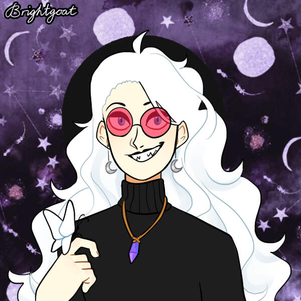

Welcome to the Library.
I hope you enjoy your time here.
I am Medium. The connecting silence and emptiness--the nebula, the scattered starstuff.
Or to be less fantastical for just a moment... I am a "system mom" of sorts. Additionally, I'm one of the primary "socialites" of the system, and effectively function as an autism mask given sentience. My hobbies include baking, cooking, witchcraft, and a variety of similar things. I try to keep everything together, in a sense, and try to foster our continued growth as a person, system, and social entity.
In an alternative-identity sense, I think of myself as a Fae Matron of some kind, some playful and caring eternal entity with a touch of ominous energy. I also have "librarian vibes", apparently, hence the library aesthetic on this portion of the site.
Thank you for taking the care to read this over. It means the world.